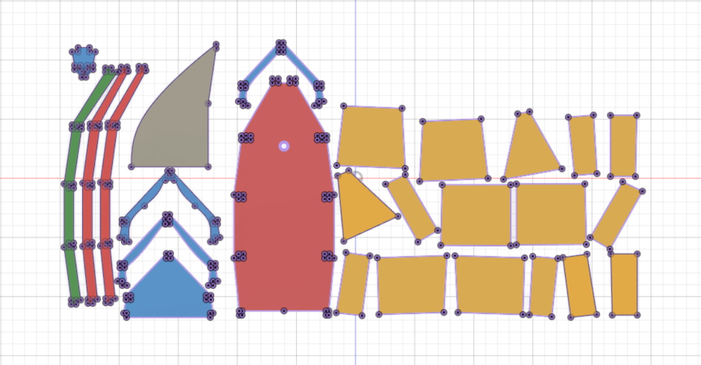

Verkefni 4
Verkefni 4 var að hanna hlut til þess að fræsa þetta var aðallega hópverkefni sem ég gerði með Huldari og ætla ég að reyna að skíra hér frá því sem ég var ábyrgur fyrir.
Við Huldar áttum fund saman þar sem við fórum yfir það sem að við vildum búa til í þessu verkefni, upphaflega hugmyndin var að fræsa skáp úr 18mm krossvið og útbúa svo mót fyrir ljósafestingu á reiðhjól úr vaxkubb, en svo áttuðum við okkur á því að við áttum einungis að velja annaðhvort en ekki bæði svo að við ákváðum að búa til bát, sem að huldar ætlar sér svo að nýta í annað verkefni í öðrum áfanga.
Upphaflega hönnun bátsins var að gera grind sem við myndum fræsa og svo líma utaná hana plötur til þess að búa til bát. svo hittumst við og ákváðum að sennilega yrði betra að gera bátinn með annari aðferð sem myndi flýta fyrir samsetningu bátsins svo við teiknuðum bátinn í heilu lagi og notuðum svo "slicer" til þess að útbúa margar plötur sem yrðu svo fræstar út og svo settum við göt í hverja plötu fyrir sig svo að báturinn yrði nú holur að innan.
Eftir að við vorum búnir að teikna upp og slice-a bátinn og vorum komnir upp í Fablab til þess að fræsa bátinn út, þá kom babb í bátinn og komumst við að því að það yrði sennilega alltof mikið vesen að fræsa bátinn út svona og það yrði mun fljótlegra og betra að gera upphaflegu hugmyndina með að fræsa beinagrind og líma plötur þar utaná.
Svo að við teiknuðum aftur upp bátinn með beinagrindaraðferðinni og bættum við kjöl. (kjölurinn yrði svo nýttur sem mát til þess að búa til kjölinn úr 3mm 304 stáli).
mættum svo á laugardeginum 9. apríl upp í fablab þar sem við kláruðum að teikna bátinn og breyta honum örlítið og bjuggum til toolpaths í Vcarve og settum svo loks í fræsinn.

Við Huldar gerðum þetta rosalega vel í sameiningu, hann byrjaði á að teikna upp bátabeinagrindina, en ég sá um að teikna up bátinn sem við settum svo í slicer en hættum við.
Huldar hélt svo áfram með beinagrindarbátinn og ég breytti hönnuninni aðeins og viðslepptum því að setja viðbótarstífur efst og notuðum bara toppinn í staðinn og skárum út fyrir "rifbeinunum" þannig. við gerðum svo toolpaths í sameiningu upp í Fablab.
Sjá betur hjá Huldari.